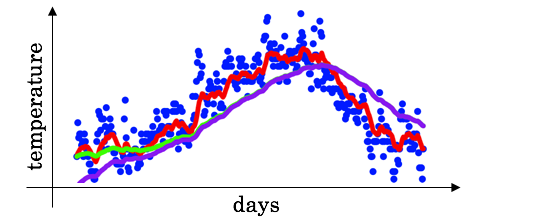

在深度学习中，经常会使用EMA（指数移动平均）这个方法对模型的参数做平均，以求提高测试指标并增加模型鲁棒。
今天瓦砾准备介绍一下EMA以及它的Pytorch实现代码。
EMA的定义
指数移动平均（Exponential Moving Average）也叫权重移动平均（Weighted Moving Average），是一种给予近期数据更高权重的平均方法。
假设我们有n个数据：$[\theta_1, \theta_2, …, \theta_n]$
- 普通的平均数：$\overline{v}=\frac{1}{n}\sum_{i=1}^n \theta_i$
- EMA：$vt = \alpha\cdot v{t-1} + (1-\alpha)\cdot \theta_t$，其中，$ v_t$表示前$t$条的平均值 ($v_0=0$)，$\alpha$ 是加权权重值 (一般设为0.9-0.999)。
Andrew Ng在Course 2 Improving Deep Neural Networks中讲到，EMA可以近似看成过去$1/(1-\alpha)$个时刻$v$值的平均。
普通的过去$n$时刻的平均是这样的：
类比EMA，可以发现当$\alpha=\frac{n-1}{n}$时，两式形式上相等。需要注意的是，两个平均并不是严格相等的，这里只是为了帮助理解。
实际上，EMA计算时，过去$1/(1-\alpha)$个时刻之前的平均会decay到 $\frac{1}{e}$ ，证明如下。
如果将这里的$v_t$展开，可以得到：
其中，$n=\frac{1}{1-\alpha}$，代入可以得到$\alpha^n=\alpha^{\frac{1}{1-\alpha}}\approx \frac{1}{e}$。
EMA的偏差修正
实际使用中，如果令$v_0=0$，步数较少的情况下，ema的计算结果会有一定偏差。

理想的平均是绿色的，因为初始值为0，所以得到的是紫色的。
因此可以加一个偏差修正（bias correction）。
显然，当t很大时，修正近似于1。
在深度学习的优化中的EMA
上面讲的是广义的ema定义和计算方法，特别的，在深度学习的优化过程中，$\theta_t$ 是t时刻的模型权重weights，$v_t$是t时刻的影子权重（shadow weights）。在梯度下降的过程中，会一直维护着这个影子权重，但是这个影子权重并不会参与训练。基本的假设是，模型权重在最后的n步内，会在实际的最优点处抖动，所以我们取最后n步的平均，能使得模型更加的鲁棒。
EMA为什么有效
网上大多数介绍EMA的博客，在介绍其为何有效的时候，只做了一些直觉上的解释，缺少严谨的推理，瓦砾在这补充一下，不喜欢看公式的读者可以跳过。
令第n时刻的模型权重（weights）为$v_n$，梯度为$g_n$，可得：
令第n时刻EMA的影子权重为$v_n$，可得：
代入上面$\theta_n$的表达，令$v_0=\theta_1$展开上面的公式，可得：
对比两式：
EMA对第i步的梯度下降的步长增加了权重系数$1-\alpha^{n-i}$，相当于做了一个learning rate decay。
PyTorch实现
瓦砾看了网上的一些实现，使用起来都不是特别方便，所以自己写了一个。
1 | class EMA(): |